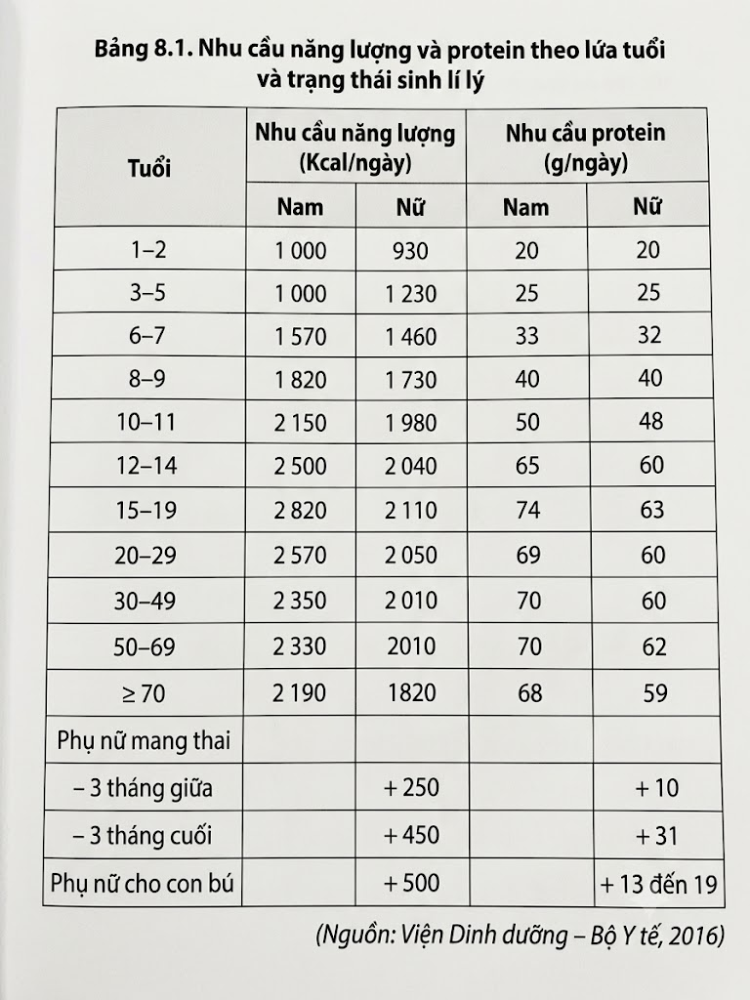
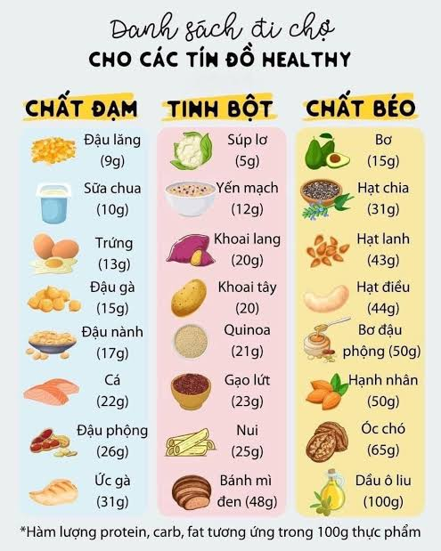
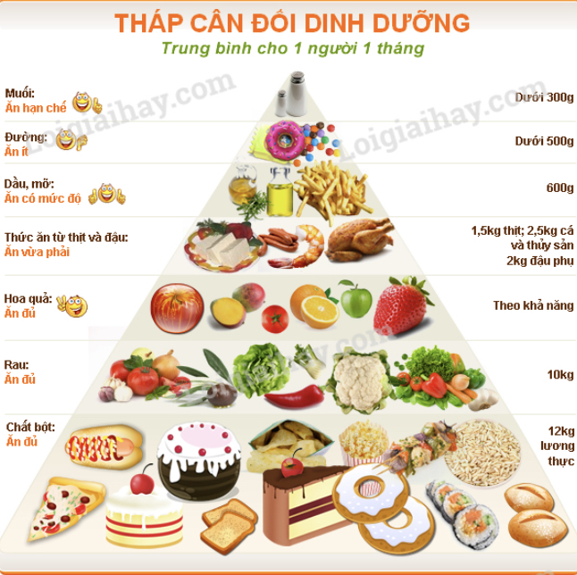

Cung cấp dinh dưỡng & Tăng hiệu suất:
Cung cấp các chất dinh dưỡng cần thiết cho cơ thể, tạo điều kiện tối ưu cho sự tồn tại và phát triển. Từ đó nâng cao năng suất lao động, tạo ra nhiều của cải, giảm thiểu chi phí y tế và thời gian điều trị bệnh.
Cần cung cấp đủ năng lượng dựa trên tuổi, giới tính và trạng thái sinh lý (mang thai, cho con bú,...). Carbohydrate, lipid và protein là những chất cung cấp năng lượng (1g carbohydrate hoặc 1g protein cung cấp 4,1kcal, 1g lipid cung cấp 9,3kcal).

Cơ thể cần đủ 6 nhóm chất dinh dưỡng chính: carbohydrate, lipid, protein, vitamin, khoáng chất và nước. Đặc biệt quan trọng là các chất dinh dưỡng thiết yếu và chất không sinh năng lượng nhưng vẫn cần cho sự phát triển của cơ thể như chất xơ.

Thực phẩm phải tươi, ngon, sạch. Chế độ ăn uống cần đảm bảo vệ sinh, ăn uống điều độ, tránh vận động ngay sau khi ăn để phòng tránh các bệnh về tiêu hóa.
Cung cấp các chất dinh dưỡng cần thiết cho cơ thể, tạo điều kiện tối ưu cho sự tồn tại và phát triển. Từ đó nâng cao năng suất lao động, tạo ra nhiều của cải, giảm thiểu chi phí y tế và thời gian điều trị bệnh.
An toàn cho người sử dụng, tránh được các bệnh do tác nhân sinh học, hoá học, vật lí trong thức ăn gây ra.

Tiêu chảy, viêm loét dạ dày - tá tràng, ung thư đại tràng,...